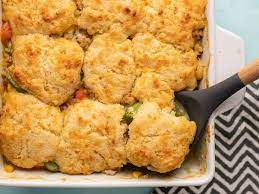

chikenbiscuit
Steps for making Chiken and biscuit
- Prepare the Chicken Filling:
- In a saucepan, combine the shredded chicken, chicken gravy or cream of chicken soup, and mixed vegetables.
- Season with salt, pepper, and any desired herbs and spices.
- Heat the mixture until it's hot and bubbling. Remove from heat.
-
Make the Biscuits:
- While the chicken filling is heating, prepare the biscuit dough according to the package instructions or your preferred biscuit recipe.
-
Assemble
- Spoon the hot chicken filling into individual oven-safe dishes or a baking dish.
- Place biscuit dough on top of the chicken mixture. You can flatten and stretch the biscuit dough slightly to cover the filling.
-
Bake
- Bake in a preheated oven at the temperature specified on the biscuit dough package or per your homemade biscuit recipe until the biscuits are golden brown and cooked through. This typically takes about 15-20 minutes.